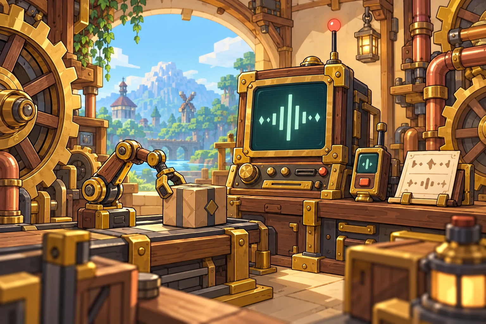
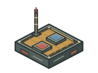
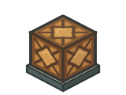
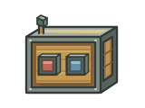
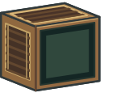

Write a frequency on the board
Right-click the Frequency Board and enter workshop.lamp. A frequency is the address that lets senders and receivers find each other.
Manage wireless redstone with frequencies. Carry data over channels.
From remote switches to smart controls, use AFN to make all your devices work together.

Learn to express wireless redstone frequencies with text!
Prepare a Frequency Board, two Create Redstone Links, a lever and a Redstone Lamp.
Right-click the Frequency Board and enter workshop.lamp. A frequency is the address that lets senders and receivers find each other.
Put a board in each link's frequency slot, and keep the other slot identical too. Set one link to send and the other to receive.
Activate the sender with a lever to power the receiving lamp. Turn the sender off, and the distant lamp goes out too.
workshop.lamp
workshop.lamp
Receiver's Redstone LampThe sender is inactive. The receiver's Redstone Lamp is off.
Dots separate address levels. Each board stores a primary frequency and up to five aliases. Senders use selectors; receivers use concrete addresses. History remembers literal addresses by level for reuse.
| Syntax | Meaning | Example |
|---|---|---|
* | Any characters within the current level | factory.*.motor |
? | One character in the current level | factory.line_?.motor |
[A-C] | A character set or range in the current level | factory.[A-C].motor |
** | Occupies a whole level; matches zero or more levels | factory.**.motor |
!name | Exclude a name at that level; multiple exclusions are allowed | factory.*.!private!test |
OR: match the primary frequency or any enabled alias.AND: the sender's selector must cover every enabled path. Cross-level response lets a shorter sender address match a deeper receiver address.
When an AFN board is present, matching ignores slot order. Two ordinary Create items retain Create's native order. The secondary slot may also hold an ordinary item; a second board is not required.
Stores the Owner, read/write permissions, hidden authorization frequency and installation lock. Ordinary boards have no identity restriction. Authorization Boards are checked by the server; unauthorized players cannot see the hidden primary frequency.
Computers are also limited by the bridge's enabled read, activation and configuration capabilities. See the full Lua reference for the differences between legacy credentials and current channel slots.
Enable long signals at both ends in the same dimension, using valid Authorization Boards. Unloaded remote locations are awakened on demand; frequency matching and permissions still apply.
Each Owner has a default quota of 15. Multiple channels on one device with the same Owner count as 1 device; different Owners are counted separately. Check server settings and the button tooltip for the actual quota.
The used / quota at the start of a long-signal button's tooltip shows registered devices and the current quota. For example, 3/15 means three registered devices out of fifteen. Usage is counted per Authorization Board Owner across the whole save, shared between dimensions. Reusing one Owner in two slots or several channels of a device counts once. With multiple Owners, each counts once and each needs available quota. Registered unloaded devices still count. Lowering a quota does not remove registrations; devices currently denied admission still appear in usage. By default, each device may enable up to ten long-signal channels; the server can lower this limit.
The quota accepts integers from 0–4096; 0 disables long signals for that Owner. Priority is: personal override → this save's server default → configuration infinite_range.default_owner_quota (default 15). set writes a personal override; allset saves the server default, while existing personal overrides retain priority. Neither command enables devices for the player.
| Command | Permission level | Effect |
|---|---|---|
/afn longsignal set <username> <quota> | Level 3 or above | Set the specified Owner's personal quota override. |
/afn longsignal allset <quota> [confirm] | Level 4 | Change the server's default quota; request first, then confirm. |
/afn longsignal del <username> | Level 3 or above | Revoke this Owner's long-signal registrations and remove their personal override, restoring the server default quota. |
/afn longsignal alldel [confirm] | Level 4 | Revoke all registered Owners' long signals and clear all personal overrides; retain the server default quota. |
/afn longsignal find | Any player | List only your own quota-using devices, including names, dimensions, positions and channel counts. A moving structure's position may be temporarily unavailable. |
username is resolved through the server's player profiles, including offline players whose profiles the server can resolve; selectors such as @a match only online players. find can only be executed by a player and accepts no target argument.
allset / alldel must be confirmed by the same executor within 600 server ticks (about 30 seconds at 20 TPS) by running the original command again with confirm; allset must use the same amount. After expiry, request again.
Give FactoryLin a quota of 20 devices; query your own devices:
/afn longsignal set FactoryLin 20
/afn longsignal findSet the server default to 15 by running these two commands in sequence:
/afn longsignal allset 15
/afn longsignal allset 15 confirmRevoke FactoryLin's long signals and clear their personal override:
/afn longsignal del FactoryLinClear all long-signal registrations and personal overrides by running these two commands in sequence:
/afn longsignal alldel
/afn longsignal alldel confirmUnderstand channels, send content, then choose how to transform and activate it.
A channel carries both data and an activation signal. Data may be text, numbers, booleans or arrays; activation strength ranges from 0 to 15. Frequencies match senders to receivers, while channel names let bridges and panels reference their data.
Changing data does not activate a signal. After entering content, you still need redstone input, a change pulse, a timer or a condition.

Sneak-right-click to configure a mailbox and choose receive, send or bidirectional mode. A sender stores content and transmits its current content to matching receivers when activated. Receivers can display that content or pass it to the attached device.
Directional and Modulated Receiving Mailboxes serve their corresponding reception scenarios. Stock Mailboxes read quantities, while Logistics Mailboxes place material orders.
Select send mode, enter frequency factory.notice and set the channel value to Apples have arrived.
Select receive mode and match both frequency slots to A. Leave output syntax empty first to inspect the raw received content.
Give A redstone input. B receives Apples have arrived. Enable automatic output on B when you want to display it on a device.
factory.noticefactory.noticeBoth ends use the same frequency. Turn on the lever to activate A and send its content to B.
To extract data, convert units or assemble content, configure channel output syntax in the next chapter. Activation timing and strength are configured separately afterward.
Put expressions inside ${…}. A single expression can retain a number or boolean type; mixing it with surrounding text creates text output. Mailboxes and hidden terminals read the received value, while bridges can also reference other channels by name.
${user.name}Read a JSON member${$[0]}Read text or the first component${temperature}Read the “temperature” channel${add($.fuel1,$.fuel2)}Add two channels that each hold one numberNo matching function found.
| Setting | Effect |
|---|---|
| Timed send / activation | Trigger at the configured interval. |
| Activate immediately after changes | Send one pulse after a manual value change is committed. Identical data, saving configuration and map-view operations do not trigger it. |
| Activate when condition is met | Stay active while true. A false result or error releases the condition source without affecting other sources. Checked only when relevant data changes. |
| Output signal strength | Accepts a number or output syntax, floors the result and clamps it to 0–15. Missing values or errors produce 0. Leave empty to follow the trigger source; local automatic activation without an external strength defaults to 15. |
For example, with channel value {"temperature":32,"ready":true}, this condition activates when temperature reaches 30 and ready is true:
${$.temperature} ≥ 30 & ${$.ready} = trueMailboxes evaluate their own raw content. Wireless reception does not trigger conditional activation or change pulses. Bridges can also reference other channels by name. Supports =, ==, !=, <, >, ≥, ≤, & / &&, || and parentheses.
${strength($)}Mailboxes read the raw received/input strength; bridges can use ${strength($.channel_name)}. No content is needed; inactive means 0. Hidden terminals' current output-strength rules still do not accept their own strength($).
Dynamic filter: The left list shows selected attributes and attributes of the current reference item. Click an attribute to copy its complete rule JSON. “Copy selected” preserves the current matching mode and inverted condition.
Let devices report their state and receive remote control.
Mailboxes read device data into channels and write received content to devices. Automatic reading and output form a data path between devices. Hidden Channel Terminals have the same automatic output capabilities.
A single selection preserves the original text. Multiple selections produce JSON, preferring field names as keys. For example, read the Total Stress Capacity field using its original key with ${$.总应力容量}. Duplicate names gain a source prefix; spaces and punctuation become underscores. Numbers, booleans, and standard JSON objects and arrays retain their types; other content becomes strings. If a multi-selection result exceeds 1,024 characters or 4,096 bytes, it outputs {"error":"content_limit"} instead of truncating JSON.
No matching capability found. Try a device name or field keyword.
Build your own interactions with screens, panels, maps and messages.
From screen controls to positions and messages, choose an interaction that fits your needs on the same channel system.

Interaction and visualizationJoin screens freely and organize multiple channels with text, gauges, maps and conversations.
DP panelsCombine sliders, joysticks, gauges, radar and information modules into your own control panel.
Coordinates and navigationSelect, save or broadcast target coordinates, and pass map locations to other devices.
 Hide the receiver
Hide the receiverConfigure wireless reception on a face of an ordinary block, weakly activate its host or automatically write to the device.
Take your messages with youMultiple chat channels, unread alerts, ringtones and quick replies get information to you in time.
Hold a Create Wrench and sneak-right-click to dismantle AFN blocks.
Bridges expand horizontally and vertically, joining into a large screen when they form a complete rectangle. Channel regions can be freely resized, with no fixed 4×4 display limit. Sneak-right-click to open configuration.
Configure regions, names, standby status, backgrounds, controls, other text and pointer colors separately. Interaction and secondary confirmation are configured per region. Enabling “Display output syntax” automatically disables screen interaction.
Frequency, screen, Cimulink and CC:T have separate configuration tabs. Rear ports connect inputs and outputs. .bridge files import and export configuration and data, but do not import screen layouts.
All coordinates use world x,y,z. A single point can be written as 0,64,0; multiple points accept successive groups of three values, 0,64,0,32,64,16, and nested arrays:
[[0,64,0],[32,64,16]]For a named point, use {"name":"Warehouse","position":[0,64,0]} or the x, y and z fields. This example displays points, lines and areas together. Each type can also be supplied alone; name is the visible name:
{
"points":[{"name":"Warehouse","color":"#FF7043","text_color":"#FFE0B2","position":[0,64,0]}],
"lines":[{"name":"Route","color":"#66BB6A","text_color":"#DCE775","points":[[0,64,0],[32,64,16]]}],
"areas":[{"name":"Work Area","color":"#42A5F5","text_color":"#B3E5FC","points":[[0,64,0],[32,64,0],[32,64,16]]}]
}color controls geometry color, and text_color controls name color. The recommended format is #RRGGBB. If omitted, each follows the corresponding bridge color. Line and area vertices inherit the geometry color unless explicitly overridden. Also accepts #RGB, 0xRRGGBB, decimal RGB integers and [r,g,b].
A line needs at least two points; an area needs at least three. Vertices connect in order. areas also accepts the name polygons, and multiple lines and areas are supported. With geometry present, the automatic self-to-target line setting has no effect; the supplied geometry still displays. Bottom-right coordinates and distance use the first point and the device's own position.
Get modules from AFN Modules at the bottom of the Dashpanels tab, place them on a panel and open properties with a Panel Wrench. Frequencies use the module's two slots in Panel Link. Hover over a module item and hold V to open its native Wiki page for its features and settings.
Standard, long, horizontal and long horizontal sliders share the same settings. They measure 3×5, 3×10, 5×3 and 10×3 panel pixels respectively. Long sliders match the diameter of the Large Radar.
Sliders send a value between their minimum and maximum, defaulting to 0–100. “Integer output” rounds to the nearest integer. Redstone strength defaults to 15 and ranges from 0–15. “Pulse after changes” is enabled by default: the slider stays active and continuously updates while operated, then retains a two-tick pulse after release. The activation condition works independently and also keeps the channel active while true. Initialization, reloading and configuration changes do not trigger change pulses.
Nodes: Enter 20,50,80 or [20,50,80], or use channel output syntax. Only nodes within the configured range apply, and markers appear by the scale. Dragging stops at the nearest node along the movement; release and drag again to cross it.
Sensitivity: A multiplier for dragging; smaller values give finer control. Standard sliders default to 1; long sliders to 0.4. Channel output syntax is supported. Hold right-click on the slider to fine-tune with the mouse wheel at half the configured sensitivity, ignoring nodes.
Channel output syntax: Leave empty to send the current value; plain text sends fixed text; an expression containing ${...} sends its evaluated result. Module names can reference values across the same panel network. Invalid expressions or missing sources stop output rather than reusing an old value.
Colors: Configure the slider, pointer and scale separately with RRGGBB or #RRGGBB. Node markers use the scale color.
Drag the joystick to send a two-dimensional array [x,y]. Two corner points define the X and Y ranges, defaulting from -1,-1 to 1,1; integer output is supported. Corners, nodes, strength, activation conditions and output all accept channel output syntax.
Nodes and memory: Nodes accept 0,0, [[0,0],[1,1]] or channel output syntax. The default node is [0,0]. Memory is off by default: on release, the joystick returns at constant speed to the nearest node. With memory on, it stays at the released position. “Pulse after changes” is on by default, maintaining activation and updating values during operation, with a short pulse after release.
Colors accept RRGGBB or #RRGGBB. Empty content shows only the background. Receiving modules retain the latest content after the signal ends. Hiding a gauge's name does not affect name references. Animations follow Dashpanels' native behavior.
Both sizes share settings and center on the module's world position. They display bridge-map points, lines, areas and their names, including on moving Sable structures. They do not render terrain or adjust scale automatically. Coordinates are absolute world x,y,z, not relative offsets. Accepted input includes a single point, successive groups of three values, nested arrays or map JSON:
0,64,0
0,64,0,24,64,16
[[0,64,0],[24,64,16]]Each line is an independent example. Only points within the scale radius appear. If coordinates are not visible, check their distance from the module and increase the scale.
{"points":[{"name":"Base","position":[0,64,0]}],"lines":[{"points":[[0,64,0],[24,64,16]]}],"areas":[{"points":[[0,64,0],[24,64,0],[24,64,16]]}]}| Setting | Effect |
|---|---|
| Map rotation | Clockwise rotation in degrees, default 0. Supports channel output syntax. |
| Scale | Horizontal distance in blocks from the center to the rim. Must exceed 0; defaults to 64. Larger values show a wider area. Supports channel output syntax. |
| Map background / grid colors | Set the disc background and circular grid colors separately. |
| Point color | Default color for received points, lines and areas. |
| Fixed points | Additional world coordinates to display. Supports names, bridge map structures and channel output syntax. |
| Fixed point color | Default color for fixed points, lines and areas. |
Fixed points accept this shorthand. Without names, coordinate arrays alone also work. The map data's color and text_color override module colors.
{[0,64,0]:"Base",[24,64,16]:"Dock"}Segmented battery-style displays come in vertical 1×4, horizontal 4×1, and long 2×10 and 10×2 sizes, all receiving one number. Limits default to 0–100. The first and second nodes divide low, middle and high ranges, colored red, yellow and green by default. Empty nodes divide the range into thirds. Nodes and limits support channel output syntax.
Radios receive pager JSON and display the latest message's avatar, name and content. Plain text appears as an anonymous message. Avatars use item:item_registry_id or player:player_UUID. messages can mix text and stock objects, rendering item icons as emotes:
{"avatar":"item:minecraft:apple","name":"Warehouse","message":"Restock complete"}
{"name":"Warehouse","messages":["Stock",{"minecraft:apple":8}]}Information boards display arbitrary channel content directly without interpreting JSON as a conversation. Gauges and LCD energy columns receive a single number, not arrays containing multiple numbers.
Numeric and content fields support channel output syntax: slider limits, nodes, strength, condition and output; joystick coordinates, strength, condition and output; gauge limits; button/switch content and strength; and map rotation, scale and fixed points. Empty slider and joystick output syntax sends raw values; plain text sends fixed text. When the input contains ${…}, an evaluated preview appears below it. Color fields still take color values.
All names in the same panel network are accessible, including every module on joined bases and other panels connected by cables. Names must be unique. AFN modules provide channel content; native modules provide only signal strength, using the highest output for modules with multiple outputs.
${slider_name}
${strength($.switch_name)}Limits must evaluate to finite numbers with minimum ≤ maximum; conditions must evaluate to booleans. Sliders stop output when an expression is invalid.
Transmit x,y,z, save locations, and show connecting lines and distance. Bridges can use Xaero terrain, the AFN map or a grid; coordinates and backgrounds can be hidden separately.
The mouse wheel zooms around the focus; middle-drag pans. View operations do not change channel values. Recenter brings self and target into view; dynamic mode rotates with the Sable structure's orientation.
Nearby-entity and hostile-mob buttons only appear when enabled in configuration. Clicking near a marker snaps to its coordinates. Right-click an entity marker on the portable terminal to continuously broadcast its position.
Sneak-right-click opens multichannel configuration: add, remove and select channels on the left; configure name, frequency, channel value, activation strength, long signals and output syntax in the middle; inventory is on the right. An older terminal retains its configuration as its first channel.
Right-click while holding the terminal to open its map. Alt + wheel or number keys switch the primary channel; taking out the device shows its current channel. Middle-click selection or map broadcasting affects only that channel; other activated channels keep working after switching. The terminal must remain held or installed on an operating base such as a Placard.
Right-click the map to add points, lines and areas. Right-click broadcasting geometry to rename, recolor or remove it. Move the mouse to the map's left edge to show the channel list. The item screen also displays geometry, hiding names when crowded.
Terminals and bridges share the same point, line and area format; see map data formats. In output syntax, $ reads the current channel's raw value.
Configure multiple channels, each serving as its own group chat.
Each channel independently configures its frequency, avatar/name toggles, ringtone, music disc, loop count and quick phrases. Search items to use as an avatar. Shortcut mappings cannot repeat within one channel.
Left-click while holding it to light the input screen; press Enter or left-click again to send a mapped message. Pagers also work on lecterns and Create Placards.
Plain text appears anonymously. Chat JSON supports item/player avatars, names and message bodies; the bridge's Conversation mode uses the same format:
{"avatar":"item:minecraft:apple","name":"Warehouse","message":"Apples have arrived"}messages mixes text with multiple stock objects. Item icons and quantities appear inline as emotes:
{"name":"Warehouse","messages":["Just received",{"minecraft:apple":8},"and",{"minecraft:iron_ingot":16},"Please collect"]}Items accept registry IDs or uniquely identifiable names. Bridge conversations can show only the latest message or a scrolling history, with configurable avatars, names, replies and a clear button. Empty avatar/name settings use an anonymous identity.
Supports Create and both old and new Sable schematics. Search frequencies, aliases, items, devices and location types. Expand devices with multiple frequencies, replace items and press Space to edit boards. Entirely empty groups are hidden, but an existing group's empty secondary slot can still accept an item.
One-click authorization binds to you; assign read/write permissions from a player list. The Edit tab adds or changes dot-separated prefixes/suffixes, or globally replaces text in primary frequencies and aliases.
Saved files are placed under afn/ in the schematics directory and retain recognizable original names. Anyone may build them. Once verified and the actual printer is identifiable, Authorization Boards bind to that printer while preserving shared permissions. Unverified copies do not inherit the original Owner.
Ticket Issuers use Authorization Boards to issue tickets. Ticket Validators check frequency and identity, then accept tickets and grant access; a full inventory does not consume a ticket. Authorization Card Readers and Identity Verification Pillars verify identities and emit redstone pulses on success. Authorization Boards themselves are not consumed.
Extend channels through CC:Tweaked, Synaxis and public interfaces.
With CC:Tweaked installed, place a computer beside the bridge or connect through a wired modem. Enable the required bridge capabilities, then use the bundled afn module:
local afn = require("afn")
for _, channel in ipairs(afn.channels()) do
print(channel.name, channel.primary_frequency)
end
-- door is an existing channel name on the bridge
local result = afn.pulse("door")
assert(result.success, result.error)afn.screen() / afn.set_screen() manage the screen; afn.display() / afn.set_display() configure channel regions, modes, interaction and styling. Set data and activate signals with separate calls.
Synaxis connects activation, value-input and value-output ports. Add-ons use the public Channel API for endpoints, permissions and long signals. Developer documentation is in the project's Channel SDK.
Applies to AFN 1.8.0. AFN WIKI · Chinese manual · English overview
Reference for functions, permissions, events, error codes, and compatibility fields in the require("afn") package and the raw afn_bridge peripheral.
Each channel can have a primary frequency, an optional secondary frequency, an optional value, and an activation state at the same time; frequency and information are not mutually exclusive storage types:
Channel name + primary frequency + optional secondary frequency + optional value + activation state
Create a channel in the bridge GUI:
| Setting | Example |
|---|---|
| Channel name | door |
| Primary frequency | factory.door |
| Secondary frequency | None |
| Channel value | CLOSED |
| Transmission/reception | Allow sending and receiving |
door in the code is the channel name, not the primary frequency. Except for temporary transmission functions, most APIs look up channels by name.
Place the computer directly next to the bridge, or connect it through a wired modem. Run:
local afn = require("afn")
local bridge, bridge_name = afn.find()
print("bridge:", bridge_name)
for _, channel in ipairs(afn.channels()) do
print(channel.name, channel.primary_frequency)
end
You should see door factory.door. afn, bridge, and channel are ordinary Lua variable names used in these examples; you can choose different names.
local afn = require("afn")
local result = afn.pulse("door") -- Defaults to strength 15 for 20 ticks
assert(result.success, result.error)
pulse activates a channel that already exists in the bridge. Because this channel has a valid primary frequency, it sends a Create/AFN wireless signal. If the primary frequency is empty, it still activates inside the bridge, but no wireless transmitter is registered.
local afn = require("afn")
local before = assert(afn.value("door"))
print("before:", before.value)
local result = afn.set_value("door", "OPEN")
assert(result.success, result.error)
local after = assert(afn.value("door"))
print("after:", after.value)
An ordinary overwrite does not require a revision. set_value does not itself activate the channel; condition rules configured separately in the GUI may activate it when its value changes. Activation does not automatically create a value either.
local afn = require("afn")
assert(afn.set_primary_frequency("door", "factory.door").success)
assert(afn.set_secondary("door", "manual", "factory.zone_a").success)
-- Clear the second ordinary frequency when a secondary frequency is not needed:
assert(afn.set_secondary("door", "none").success)
Secondary frequency modes are none, manual, and auth. none clears the secondary frequency; manual writes ordinary frequency text. Players should configure authentication boards for the current tiled bridge in the GUI's actual channel frequency slots; Lua cannot submit or reconstruct Owner, ACL, or hidden authentication identities. auth retains the legacy bridge's linked credential semantics. It does not create an authentication board in the current channel, and without the legacy credential it cannot establish a valid authenticated wireless link.
Run local afn = require("afn") before each of the following examples.
| Purpose | Shortest form | Permission |
|---|---|---|
| List all channels | afn.channels() |
Read |
| Read a complete channel | afn.get("door") |
Read |
| Read the value, including the absent state | afn.value("door") |
Read |
| Read primary and secondary frequencies | afn.frequency("door") |
Read |
| Activate for 1 second | afn.pulse("door") |
Activate |
| Activate continuously | afn.set("door") |
Activate |
| Stop continuous activation created by this computer | afn.clear("door") |
Admitted |
| Write a value directly | afn.set_value("door", "OPEN") |
Configure |
| Clear to "no value" | afn.clear_value("door") |
Configure |
| Change the primary frequency | afn.set_primary_frequency("door", "factory.door") |
Configure |
| Change the ordinary secondary frequency | afn.set_secondary("door", "manual", "factory.zone_a") |
Configure |
| Transmit temporarily for 1 second | afn.pulse_temporary("factory.bell") |
Activate |
| Read the whole screen's dimensions and regions | afn.screen() |
Read |
| Configure the screen layout | afn.set_screen({placements={...}}) |
Configure |
| Read a channel's screen settings | afn.display("door") |
Read |
| Change the interaction mode and colors | afn.set_display("door", {mode="switch", control_color=0x88CC66}) |
Configure |
Square brackets in signatures indicate optional parameters:
afn.set_value(channel, value[, revision[, bridge_name]])
Do not type the square brackets in an actual call. With only one bridge, you can usually omit the final bridge_name. To specify the last parameter while skipping an intermediate parameter, use nil as a placeholder:
afn.set_value("notice", "新内容", nil, "left")
afn.set_secondary("door", "none", nil, "left")
bridge_name is the peripheral name assigned by CC, such as left or a name on the wired network; it is not a channel name, block title, or primary frequency.
old and current meanlocal current = assert(afn.value("counter"))
current is simply a local variable name chosen by the author to hold the returned table:
{
present = true,
kind = "real",
value = 12,
revision = 7
}
It is not an AFN keyword. old, data, or counter_state would work just as well.
To replace a value with specific content, write it directly:
local result = afn.set_value("notice", "列车即将进站")
assert(result.success, result.error)
Passing the old revision is recommended only when the new value depends on the old value you just read, such as incrementing a counter:
local current = assert(afn.value("counter"))
local result = afn.set_value("counter", current.value + 1, current.revision)
if not result.success and result.error == "revision_conflict" then
printError("The value has changed; read it again before recalculating")
else
assert(result.success, result.error)
end
The revision is a monotonically increasing version number on each bridge. Clearing a value also advances its tombstone revision, so the sequence "value present → no value → value present again" does not cause an ABA misidentification. After a conflict, read again and recalculate instead of blindly retrying submissions in a loop.
| Lua input | kind |
Read result |
|---|---|---|
| string | text |
string |
| boolean | boolean |
boolean |
| Finite number | real |
number |
| Contiguous array of 1–128 finite numbers | real |
Array for multiple elements; a single element still returns a number |
Text is limited to 1024 Unicode code points and 4096 UTF-8 bytes. Real arrays reject empty tables, sparse tables, nonnumeric elements, NaN, positive or negative infinity, and inputs with more than 128 elements. Valid components are normalized toward zero to at most three decimal places at the model boundary. An invalid write is rejected atomically, with nothing partially saved. Chart and switch screen settings display up to 8 components; this does not limit the length of arrays stored or transmitted by a channel.
local ok1 = afn.set_value("notice", "列车即将进站")
local ok2 = afn.set_value("door_open", true)
local ok3 = afn.set_value("pose", {12.5, 64, -8, 0, 0, 0, 1})
assert(ok1.success and ok2.success and ok3.success)
local bad = afn.set_value("pose", {1, 2, 0/0})
print(bad.success, bad.error) -- false invalid_information_value
Empty text "" is a present text value. Only clear_value produces present=false. Legacy coordinate/player values in saved data can be read, but remain read-only.
default, switch, bar, gauge, map, logistics, stock, and dialogue correspond to text, switches, bar charts, gauges, maps, logistics, stock, and dialogue. Modes interpret the unified channel value without restricting its storage type; logistics separately displays preconfigured supply groups. Dialogue uses pager JSON and supports text and item-count emotes, a latest-message view or history list, and simple replies. Invalid values only cause a visual fallback; switching views never overwrites the raw value.
Integer adjustment affects only screen touch controls, not writes from CC:T, Synaxis, wireless signals, or the ordinary GUI. Tiled bridges use rectangular regions instead of cycling through full-screen channels. The legacy display-list and selected-channel functions remain available; new programs should use screen/set_screen.
| Capability | Typical functions |
|---|---|
| Read | channels/get/value/frequency, screen switching |
| Activate | set/pulse/toggle, temporary transmissions |
| Configure | Value writes, CRUD, primary/secondary frequencies, display lists, Synaxis, redstone bindings |
| Continued admission only | clear, clear_temporary*, for fail-safe cleanup |
Read, activation, and configuration switches are managed independently in the bridge GUI. Current ComputerID admission checks retain the legacy linked device credential: without that credential, nonnegative ComputerIDs are accepted; when a credential exists, its whitelist is checked, and an empty whitelist rejects all computers. An authentication board in a channel slot and this legacy device credential are separate settings. Placing an authentication board in a channel does not establish that computers are protected by a whitelist; check the GUI's CC capability switches.
Lua cannot replace a real authentication board it lacks permission to manage. Updating or removing such channels may return frequency_board_permission_denied. An authorized player must edit the GUI frequency slots when the identity needs to change.
A session is established for each ComputerID when it connects. Recalculation and updates occur only when authentication boards, whitelists, or capability switches change. Each function call performs only an O(1) cached read, without scanning the world, block entities, NBT, ACLs, or whitelists. Revoking admission or activation permission clears the continuous leases and temporary transmissions left by that computer.
Incorrect argument types or counts, missing peripherals, and permission issues usually raise Lua errors; catch them with pcall. Operational rejections usually return success=false and a stable error code:
local ok, result_or_error = pcall(afn.pulse, "door", 15, 20)
if not ok then
printError(result_or_error) -- For example, activation permission is disabled
elseif not result_or_error.success then
printError(result_or_error.error) -- For example, unknown_channel
end
{ success=boolean, error=string, active=boolean, strength=number }
set_value/clear_value also return value_present/value_kind/value/revision. On success, error="".
{ success=boolean, error=string, channel=table|nil }
After a successful creation or update, channel is the latest complete snapshot; after a successful deletion, it is nil. Failures never apply partial changes.
Main fields returned by channels/get:
| Field | Meaning |
|---|---|
id, name, schema_version |
Stable UUID, name, current schema (2) |
receive_enabled, active, strength, displayed |
Whether wireless reception is allowed, current activation, strength from 0–15, display-list state |
primary_frequency |
Primary frequency; may be empty |
secondary_mode |
none/manual/auth |
secondary_frequency |
Used only by manual mode |
value_present |
Whether a value exists |
value_kind, channel_value, value_revision |
Value tag, actual value, version number |
synaxis_activation/receive/publish |
{enabled,format,x,y} |
redstone_bindings |
Array of {side,strength}; strength may be "all" |
last_error |
Most recent wireless error; normally an empty string |
Compatibility fields type/subtype/value/attach_auth/revision remain available. The projection is type="frequency" when the primary frequency is nonempty or no value exists; otherwise, it is type="information". This projection cannot express a channel with both a primary frequency and a value. New code should use the v2 fields.
Channels have no enabled/disabled state. Once created, they can always be activated by redstone, CC:T, and Synaxis to transmit. receive_enabled=false means "send only" and blocks incoming Create wireless signals; true means "allow sending and receiving". Display is also explicitly configured: new channels are displayed by default, and activation does not automatically change the display list.
afn.findafn.find([bridge_name]) -> raw_bridge, resolved_name
Finds an afn_bridge peripheral; without a name, selects the first one found. Discovery itself does not grant read permission.
-- Success
local raw, name = afn.find()
print(name, type(raw))
-- Failure: the name does not refer to an AFN bridge
local ok, err = pcall(afn.find, "left")
if not ok then printError(err) end
afn.channelsafn.channels([bridge_name]) -> channel_snapshot[]
Returns complete snapshots of all channels in configuration order; requires read permission.
-- Success
for _, c in ipairs(afn.channels()) do print(c.name, c.primary_frequency) end
-- Failure: read permission is disabled
local ok, err = pcall(afn.channels)
if not ok then printError(err) end
afn.activeafn.active([bridge_name]) -> string[]
Returns the names of channels with an effective strength greater than 0, including local and incoming wireless activation; requires read permission.
-- Success
for _, name in ipairs(afn.active()) do print("active", name) end
-- Failure: the specified bridge does not exist
local ok, err = pcall(afn.active, "missing")
if not ok then printError(err) end
afn.display_channelsafn.display_channels([bridge_name]) -> string[]
Returns the current effective display list; requires read permission. Legacy screens use its order; positions on the new tiled screen are determined by screen().placements.
-- Success
print(textutils.serialize(afn.display_channels()))
-- Failure: bridge_name must be a string
local ok, err = pcall(afn.display_channels, 123)
if not ok then printError(err) end
afn.getafn.get(channel[, bridge_name]) -> channel_snapshot|nil
Returns one complete snapshot; returns nil for an unknown name.
-- Success
local c = assert(afn.get("door"))
print(c.primary_frequency, c.value_present)
-- Failure result: an unknown channel is not an exception
assert(afn.get("missing") == nil)
afn.stateafn.state(channel[, bridge_name]) -> table|nil
Returns {receive_enabled,active,strength,displayed,type,subtype,value_present,value_kind,revision}. receive_enabled=false means send only; type/subtype are legacy projections; an unknown channel returns nil.
-- Success
local s = assert(afn.state("door"))
print(s.active, s.strength, s.value_present)
-- Failure: the computer is not admitted
local ok, err = pcall(afn.state, "door")
if not ok then printError(err) end
afn.valueafn.value(channel[, bridge_name]) -> {present,kind,value,revision}|nil
Returns nil for an unknown channel. A known channel without a value returns {present=false,kind="",value="",revision=tombstone}.
-- Success: the absent-value state can also be distinguished
local v = assert(afn.value("door"))
if v.present then print(v.kind, textutils.serialize(v.value)) else print("no value") end
-- Failure result: unknown channel
assert(afn.value("missing") == nil)
afn.channel_valueAn exact alias of afn.value, with the same parameters and return values.
-- Success
local v = assert(afn.channel_value("door"))
print(v.revision)
-- Failure
local ok, err = pcall(afn.channel_value, "door", "missing_bridge")
if not ok then printError(err) end
afn.information (compatibility)afn.information(channel[, bridge_name]) -> {value,subtype,revision}|nil
afn.information is the compatibility read interface for unified values: it returns an existing value without checking the legacy type; it returns nil when the value is absent or the channel is unknown. New code should use afn.value to distinguish unknown channels from known channels without values.
-- Success: channels with both a primary frequency and a value are readable too
local info = assert(afn.information("door"))
print(info.subtype, info.value)
-- Failure result: nil when no value exists
if afn.information("value_less") == nil then print("no value") end
afn.frequencyafn.frequency(channel[, bridge_name]) -> {primary,secondary_mode,secondary_frequency,attach_auth}|nil
attach_auth is the compatibility boolean projection of secondary_mode=="auth".
-- Success
local f = assert(afn.frequency("door"))
print(f.primary, f.secondary_mode)
-- Failure result
assert(afn.frequency("missing") == nil)
afn.last_errorafn.last_error(channel[, bridge_name]) -> string|nil
Returns the most recent wireless error, such as invalid_frequency_or_auth or wireless_unavailable; returns nil if there is no error or the channel is unknown.
-- Success
local err = afn.last_error("door")
if err then printError(err) end
-- Failure: disabled read permission raises an error
local ok, err2 = pcall(afn.last_error, "door")
if not ok then printError(err2) end
afn.get_display_channelafn.get_display_channel([bridge_name]) -> string|nil
Returns the current channel in the legacy selected-channel model, or nil when the list is empty. Requires read permission.
-- Success
print(afn.get_display_channel() or "standby")
-- Failure
local ok, err = pcall(afn.get_display_channel, "missing")
if not ok then printError(err) end
afn.set_display_channelafn.set_display_channel(channel[, bridge_name]) -> boolean
Selects a channel from the current display list without activating it or changing its value. Requires read permission.
-- Success
assert(afn.set_display_channel("door"))
-- Failure result: not in the display list
assert(not afn.set_display_channel("hidden"))
afn.next_display_channelafn.next_display_channel([bridge_name]) -> string|nil
Switches to the next entry and returns its name; an empty list returns nil.
-- Success
print(afn.next_display_channel() or "standby")
-- Failure
local ok, err = pcall(afn.next_display_channel, false)
if not ok then printError(err) end
afn.previous_display_channelafn.previous_display_channel([bridge_name]) -> string|nil
Switches to the previous entry and returns its name; an empty list returns nil.
-- Success
print(afn.previous_display_channel() or "standby")
-- Failure
local ok, err = pcall(afn.previous_display_channel, "missing")
if not ok then printError(err) end
afn.setafn.set(channel[, strength[, bridge_name]]) -> action_result
Creates or replaces a continuous activation lease for the current ComputerID. Strength is 1–15, defaulting to 15; requires activation permission.
-- Success
local r = afn.set("door", 12)
assert(r.success, r.error)
-- Failure result
local bad = afn.set("missing", 15)
print(bad.success, bad.error) -- false unknown_channel
afn.pulseafn.pulse(channel[, strength[, ticks[, bridge_name]]]) -> action_result
Creates a timed lease lasting 1–1200 ticks. Defaults to strength 15 for 20 ticks.
-- Success
assert(afn.pulse("bell", 15, 40).success)
-- Failure: an out-of-range argument raises an error
local ok, err = pcall(afn.pulse, "bell", 15, 1201)
if not ok then printError(err) end
afn.toggleafn.toggle(channel[, strength[, bridge_name]]) -> action_result
Toggles only the current ComputerID's continuous lease. It does not clear sources from other computers, redstone, Synaxis, or wireless signals.
-- Success
local r = afn.toggle("maintenance", 8)
print(r.success, r.active)
-- Failure result
local bad = afn.toggle("missing", 8)
print(bad.error) -- unknown_channel
afn.clearafn.clear(channel[, bridge_name]) -> action_result
Clears the current ComputerID's lease on this channel. It remains available after activation permission is disabled, but the computer must still be admitted; revoking whitelist admission automatically cleans up the lease.
-- Success
assert(afn.clear("door").success)
-- Failure result
local bad = afn.clear("missing")
print(bad.error) -- unknown_channel
afn.clear_allafn.clear_all(channel[, bridge_name]) -> action_result
Clears all runtime sources on the target channel; requires configuration permission.
-- Success
assert(afn.clear_all("emergency").success)
-- Failure: configuration permission is disabled
local ok, err = pcall(afn.clear_all, "emergency")
if not ok then printError(err) end
afn.set_valueafn.set_value(channel, value[, expected_revision[, bridge_name]]) -> value_action_result
Writes or replaces the unified value according to its Lua type, including creating a value where none exists; does not activate the channel. expected_revision may be omitted.
-- Success: simple overwrite
local r = afn.set_value("door", {12.5, 64, -8})
assert(r.success, r.error)
print(r.value_kind, r.revision)
-- Failure: an invalid array is rejected atomically
local bad = afn.set_value("door", {[1]=1, [3]=3})
print(bad.success, bad.error) -- false invalid_information_value
afn.set_channel_valueAn exact alias of afn.set_value.
-- Success
assert(afn.set_channel_value("door", true).success)
-- Failure: stale revision
local bad = afn.set_channel_value("door", false, -1)
print(bad.success, bad.error) -- false revision_conflict
afn.set_information (compatibility)afn.set_information(channel, value[, expected_revision[, bridge_name]]) -> action_result
afn.set_information is the compatibility write interface for unified values and can create a previously absent value. Its semantics match set_value, but the compatibility raw method returns only the basic action fields. New code should use set_value to receive the value and revision fields.
-- Success
assert(afn.set_information("door", "OPEN").success)
-- Failure result
local bad = afn.set_information("door", 0/0)
print(bad.success, bad.error) -- false invalid_information_value
afn.clear_valueafn.clear_value(channel[, expected_revision[, bridge_name]]) -> value_action_result
Clears to "no value" and advances the tombstone revision if a value actually existed; does not stop activation.
-- Success
local r = afn.clear_value("door")
assert(r.success and not r.value_present, r.error)
-- Failure: concurrent modification conflict
local bad = afn.clear_value("door", -1)
print(bad.success, bad.error) -- false revision_conflict
afn.clear_channel_valueAn exact alias of afn.clear_value.
-- Success
assert(afn.clear_channel_value("door").success)
-- Failure result
local bad = afn.clear_channel_value("missing")
print(bad.error) -- unknown_channel
afn.set_primary_frequencyafn.set_primary_frequency(channel, frequency[, bridge_name]) -> configuration_result
Sets the primary frequency. An empty string is valid: it clears the primary frequency and leaves the wireless network without clearing the value or local configuration.
-- Success
assert(afn.set_primary_frequency("door", "factory.door.*").success)
-- Failure result
local bad = afn.set_primary_frequency("door", "broken.[")
print(bad.success, bad.error) -- false invalid_frequency
afn.set_secondaryafn.set_secondary(channel, mode[, frequency[, bridge_name]]) -> configuration_result
mode is none/manual/auth. manual requires a valid frequency; other modes ignore the frequency. auth links only the legacy device credential and cannot create an authentication board or adopt an arbitrary channel's identity. Current real authentication boards are configured in the GUI. Use nil as a placeholder when specifying a named bridge while omitting the frequency.
-- Success
assert(afn.set_secondary("door", "manual", "factory.zone_a").success)
assert(afn.set_secondary("door", "none").success)
-- Failure result
local bad = afn.set_secondary("door", "manual")
print(bad.success, bad.error) -- false invalid_secondary
afn.set_channel_displayedafn.set_channel_displayed(channel, displayed[, bridge_name]) -> boolean
Changes one channel's display flag; the target must exist. Requires configuration permission. Activation does not automatically change the display flag.
-- Success
assert(afn.set_channel_displayed("door", true))
-- Failure result
assert(not afn.set_channel_displayed("missing", true))
afn.set_display_channelsafn.set_display_channels(channel_names[, bridge_name]) -> boolean
Atomically replaces the display list and its order. The argument must be a contiguous array of existing, unique channel-name strings; an empty array is valid. Unlisted channels are not displayed and are not automatically added when active.
-- Success
assert(afn.set_display_channels({"door", "notice", "boiler"}))
-- Failure result: duplicate name; the old list is retained
assert(not afn.set_display_channels({"door", "door"}))
afn.create_channelafn.create_channel(definition[, bridge_name]) -> configuration_result
Use v2 fields and omit the legacy type:
| Field | Required | Description |
|---|---|---|
name |
Yes | Unique name, up to 16 characters |
primary_frequency |
Explicit value recommended | May be empty; even an empty value explicitly selects the unified definition |
secondary_mode |
No | none (default), manual, auth |
secondary_frequency |
In manual mode | Ordinary secondary frequency |
value_present |
No | Inferred by default from whether channel_value exists |
value_kind |
No | text/boolean/real; inferred from the Lua type if omitted |
channel_value |
When value_present=true | Actual value |
receive_enabled |
No | Defaults to true; false means send only, true allows sending and receiving |
displayed |
No | Defaults to true |
-- Success: one channel has both a wireless primary frequency and a value
local r = afn.create_channel({
name = "door",
primary_frequency = "factory.door",
secondary_mode = "none",
value_present = true,
value_kind = "text",
channel_value = "CLOSED",
receive_enabled = true,
displayed = true
})
assert(r.success, r.error)
-- Failure: manual mode has no ordinary secondary frequency
local bad = afn.create_channel({
name = "broken", primary_frequency = "factory.broken",
secondary_mode = "manual"
})
print(bad.success, bad.error)
Legacy fields type/frequency/subtype/value/attach_auth are still accepted for migrating old programs. Do not submit them together with v2 fields that have different meanings; conflicts raise a Lua argument error.
afn.update_channelafn.update_channel(channel, changes[, bridge_name]) -> configuration_result
Atomically updates the supplied fields, leaving omitted fields unchanged. Recommended fields are name/primary_frequency/secondary_mode/secondary_frequency/value_present/value_kind/channel_value/receive_enabled/displayed. receive_enabled=false only disables incoming wireless signals; it does not disable the channel or stop local transmission. To clear the value, supply only value_present=false; use set_value for value changes sensitive to concurrency.
-- Success
local r = afn.update_channel("door", {
name = "yard_door",
primary_frequency = "yard.door",
channel_value = "READY",
value_kind = "text"
})
assert(r.success, r.error)
-- Failure: declares no value while supplying one; no changes are applied
local bad = afn.update_channel("yard_door", {
value_present = false, channel_value = "conflict"
})
print(bad.success, bad.error)
afn.remove_channelafn.remove_channel(channel[, bridge_name]) -> configuration_result
Deletes a persistent channel and cleans up its leases, wireless actors, and Synaxis endpoints. On success, channel=nil.
-- Success
local r = afn.remove_channel("temporary_channel")
assert(r.success and r.channel == nil, r.error)
-- Failure result
local bad = afn.remove_channel("missing")
print(bad.error) -- unknown_channel
afn.set_channel_type (deprecated compatibility)afn.set_channel_type(channel, legacy_type[, replacement[, bridge_name]])
-> configuration_result
frequency/information are compatibility projections only; they do not represent the current storage model:
frequency only ensures that a primary frequency exists. If supplied, replacement must be a valid primary frequency; the existing value is retained.information only ensures that a value exists and clears the primary/secondary frequencies. If supplied, replacement is parsed using the current value tag.New programs should use set_primary_frequency, set_secondary, set_value, and clear_value to modify the independent fields explicitly.
-- Compatibility success: existing values are retained
local r = afn.set_channel_type("door", "frequency", "factory.door")
assert(r.success, r.error)
-- Failure: neither a primary frequency nor replacement exists
local bad = afn.set_channel_type("value_only", "frequency")
print(bad.success, bad.error)
afn.set_information_subtype (deprecated compatibility)afn.set_information_subtype(channel, subtype[, replacement[, bridge_name]])
-> configuration_result
Legacy value-tag conversion interface. Newly created values can use only real/text/boolean; changing the type usually also requires a compatible replacement. New programs should call set_value directly; its Lua type determines the tag.
-- Compatibility success
assert(afn.set_information_subtype("door", "boolean", true).success)
-- Failure: coordinate/player are read-only
local bad = afn.set_information_subtype("door", "coordinate", {0, 64, 0})
print(bad.success, bad.error) -- information_subtype_read_only
afn.set_synaxis_activationafn.set_synaxis_activation(channel, enabled[, format[, x, y[, bridge_name]]])
-> configuration_result
Configures the independent Synaxis → bridge activation input. Only real/boolean formats are allowed; omitting format or passing an empty string retains the current format. x and y must be supplied together and must both be within 0–112. Explicitly calling this function, even to disable the input, exits the legacy migration semantics in which a value port also activates the channel.
-- Success
local r = afn.set_synaxis_activation("door", true, "real", 24, 60)
assert(r.success, r.error)
-- Failure result: the activation port does not support vec3
local bad = afn.set_synaxis_activation("door", true, "vec3")
print(bad.success, bad.error) -- unsupported_synaxis_activation_format
afn.set_synaxis_receiveafn.set_synaxis_receive(channel, enabled[, format[, x, y[, bridge_name]]])
-> configuration_result
Configures the Synaxis → bridge value input, which writes values without activating the channel. Supported formats are real/boolean/vec3/quaternion; omitting the format retains the current format. Short arrays overwrite the leading elements and retain the old tail; longer arrays extend the value. An invalid frame leaves the old value unchanged.
-- Success
assert(afn.set_synaxis_receive("pose", true, "vec3", 20, 70).success)
-- Failure result: coordinates must be paired and within range
local bad = afn.set_synaxis_receive("pose", true, "vec3", 200, 70)
print(bad.success, bad.error) -- invalid_synaxis_position
afn.set_synaxis_publishafn.set_synaxis_publish(channel, enabled[, format[, x, y[, bridge_name]]])
-> configuration_result
Configures the bridge → Synaxis value output, which publishes values without activating the channel. Failed conversions output schema-safe defaults: false, 0, or all-zero arrays; Quaternion fills a missing w with 1.
-- Success
assert(afn.set_synaxis_publish("pose", true, "quaternion", 88, 70).success)
-- Failure result: new Pose/Twist ports cannot be created
local bad = afn.set_synaxis_publish("pose", true, "pose")
print(bad.success, bad.error) -- unsupported_synaxis_format
The three directions together allow at most 32 Synaxis ports per bridge. Enabling only value input/output does not count as activation; a Synaxis activation lease is created only when the activation port receives a valid Real/Boolean.
afn.bind_redstoneafn.bind_redstone(channel, side, strength[, bridge_name])
-> configuration_result
side is front/back/left/right/up/down/all, relative to the front of the screen; strength is 1–15 or the string "all". The same input may be bound to multiple channels; an identical combination is idempotent.
-- Success: any direction and any nonzero strength
assert(afn.bind_redstone("door", "all", "all").success)
-- Failure: invalid direction
local bad = afn.bind_redstone("door", "north", 15)
print(bad.success, bad.error) -- invalid_redstone_binding
afn.unbind_redstoneafn.unbind_redstone(channel, side[, bridge_name]) -> configuration_result
Deletes all strength rows under this exact side selector. "all" deletes only omnidirectional rows, leaving the six specific directions untouched.
-- Success
assert(afn.unbind_redstone("door", "front").success)
-- Failure result
local bad = afn.unbind_redstone("door", "north")
print(bad.success, bad.error) -- invalid_redstone_binding
afn.transmit_temporaryafn.transmit_temporary(frequency[, strength[, attach_auth[, bridge_name]]])
-> {success,error,active,strength,handle}
Creates a continuous wireless transmission that does not belong to a persistent channel, defaulting to strength 15. Temporary APIs transmit only strength, without carrying any channel value. attach_auth=true depends on the legacy linked device authentication credential; without it, the result is auth_board_unavailable. It does not select or fabricate an identity from current channel frequency slots. To send on a current authenticated channel, configure the real boards in the GUI first, then call set/pulse.
-- Success
local tx = afn.transmit_temporary("factory.alarm", 12, false)
assert(tx.success, tx.error)
print(tx.handle)
-- Failure result: invalid frequency
local bad = afn.transmit_temporary("broken.[")
print(bad.success, bad.error)
afn.pulse_temporaryafn.pulse_temporary(frequency[, strength[, ticks[, attach_auth[, bridge_name]]]])
-> {success,error,active,strength,handle}
Creates a temporary wireless transmission lasting 1–1200 ticks; defaults to strength 15 for 20 ticks.
-- Success
local tx = afn.pulse_temporary("station.bell", 15, 40, false)
assert(tx.success, tx.error)
-- Failure: an out-of-range argument raises an error
local ok, err = pcall(afn.pulse_temporary, "station.bell", 15, 1201)
if not ok then printError(err) end
afn.clear_temporaryafn.clear_temporary(handle[, bridge_name]) -> action_result
Stops one temporary transmission owned by the current ComputerID. Cleanup remains available when activation permission is disabled, but the computer must still be admitted.
-- Success
local tx = assert(afn.transmit_temporary("factory.alarm"))
assert(afn.clear_temporary(tx.handle).success)
-- Failure result
local bad = afn.clear_temporary("missing-handle")
print(bad.success, bad.error) -- unknown_temporary_handle
afn.clear_temporary_allafn.clear_temporary_all([bridge_name]) -> integer
Stops all temporary transmissions belonging to the current ComputerID and returns the number removed.
-- Success
print("removed", afn.clear_temporary_all())
-- Failure: rejected whitelist admission raises an error; revocation itself cleans up automatically
local ok, err = pcall(afn.clear_temporary_all)
if not ok then printError(err) end
The current bridge screen can be tiled horizontally and vertically, without the legacy large CRT device. Create channels in the GUI or with create_channel, then configure regions and display settings. Layout APIs use block units. An individual region no longer has the old 4×4 limit, but it must stay within the actual screen rectangle and must not overlap other regions.
afn.screen([bridge_name]) / raw getScreen()Requires read permission. Returns {adaptive,width,height,enabled,interaction_locked,revision,placements}. width/height are the whole screen's dimensions in blocks; revision is the configuration version, not the value version. Each region contains {channel,channel_id,x,y,width,height}, with coordinates starting at 0,0 in the top left.
afn.set_screen(changes[, bridge_name]) / raw setScreen(changes)Requires configuration permission. Can change enabled, interaction_locked, and placements; may include expected_revision=afn.screen().revision to avoid overwriting other configuration changes. Omitted fields remain unchanged. placements replaces the entire layout; an empty array clears it. Entries identify channels by channel or channel_id; if both are given, they must identify the same channel. Each channel can have at most one region. A region may use any positive integer width and height within the connected bridge screen's bounds, but cannot overlap or extend outside them. Rectangular layouts are supported only on tiled bridges.
Returns {success,error,screen}; failure leaves the original configuration unchanged. Turning off the screen or locking interaction does not stop wireless channels.
local afn = require("afn")
local screen = afn.screen()
assert(screen.width >= 2 and screen.height >= 2, "A screen of at least 2×2 is required")
local result = afn.set_screen({
expected_revision = screen.revision,
placements = {{channel="库存", x=0, y=0, width=2, height=2}}
})
assert(result.success, result.error)
afn.display(channel[, bridge_name]) / raw getChannelDisplay(channel)Requires read permission. Returns this channel's screen configuration, or nil for an unknown channel. Reads use only immutable snapshots published by the server; they do not wait for task_complete or consume timer events.
afn.set_display(channel, changes[, bridge_name]) / raw setChannelDisplay(channel, changes)Requires configuration permission. Changes only the supplied fields; may include expected_revision=afn.screen().revision. Returns {success,error,display}. Failures never apply partial changes. This does not change raw channel content or open a player confirmation dialog. Unknown fields, incorrect types, nonfinite numbers, and out-of-range values are rejected.
| Field | Format and effect |
|---|---|
mode |
default/switch/bar/gauge/map/logistics/stock/dialogue. Horizontal bars use bar_horizontal=true, rather than a separate mode |
activation_condition |
Condition string, up to 1024 code points / 4096 UTF-8 bytes; an empty string disables it. Supports output syntax references and functions, comparisons, and logical operations. Continuously activates while true, without rewriting the channel value |
output_signal_strength |
Numeric string or output syntax, up to 1024 code points / 4096 UTF-8 bytes, such as "8", "${库存[0]}", or "${strength($.传感器)}". A number or single-element numeric array result is clamped to 0–15, with fractions rounded down; missing values or errors output 0. When set, overrides local activation output without changing incoming wireless strength; directly or indirectly reading its own strength is prohibited. An empty string follows the triggering source's strength; automatic activation without an external strength source defaults to 15 |
show_name / show_idle |
boolean; controls the channel title and idle state respectively |
dialogue_show_avatar / dialogue_show_name |
boolean; dialogue message avatars and sender names, shown by default |
dialogue_latest_only |
boolean; true shows only the latest message, false shows a history list that can be scrolled directly with the mouse wheel; the message body is always shown. The legacy key dialogue_show_message is a synonymous compatibility alias; if both keys are supplied, their values must agree |
dialogue_replies |
String array of simple dialogue replies; shares storage with presets, so both cannot be supplied in the same update |
dialogue_send_avatar / dialogue_send_name |
string; avatar/name used when the bridge sends a reply. The avatar may be item:minecraft:apple or player:UUID; empty values use anonymous identity without inferring a player |
dialogue_allow_clear |
boolean; enables a clear button on the dialogue screen that clears both history and the channel value; interaction permissions still apply |
display_output_syntax |
boolean; displays the evaluated result of the channel's output syntax. Enabling it disables screen interaction; the calculated result cannot be treated as an editable raw value |
interaction_enabled / change_confirmation |
boolean; controls whether players can interact and whether value changes require confirmation; does not restrict CC value writes |
integer_adjustment / sensitivity |
boolean / positive finite number; preferences for adjusting numbers on the screen |
charset |
Nonempty string, up to 32 characters; character set for screen text adjustment |
minimum / maximum |
Finite lower/upper bounds. Bar charts and gauges require the minimum to be less than the maximum; a legacy unbounded range is automatically set to 0–15 when entering a chart mode |
bar_horizontal |
boolean; horizontal bar chart |
chart_components |
Contiguous array of up to 8 {name,minimum,maximum} entries; used by bar charts, gauges, and array switches. Names are limited to 16 characters. Omitted bounds use the effective channel range; switches use 0–1 for legacy unbounded ranges |
presets |
String array of up to 32 entries; used for default-mode options, logistics supply groups, or simple dialogue replies. Each entry is limited to 1024 code points, with a total limit of 8192 code points |
control_color / background_color / other_color |
Integer RGB, such as 0x88CC66; -1 restores the default. Controls widgets, the screen background, and foreground elements such as text, numbers, and gauge needles, respectively |
control_palette / background_palette |
Built-in palette number 0–3; an RGB color takes precedence when set |
map_source |
auto/xaero/afn/grid; auto selects Xaero→AFN→grid in that order. Terrain sources are resolved on the client; the server does not need Xaero installed |
map_show_connection / map_show_distance / map_show_coordinates |
boolean; controls the connecting line, distance, and coordinates independently; shown by default |
map_background_hidden |
boolean; displays only map overlays without drawing terrain |
map_dynamic_rotation |
boolean; follows the rotation of the Sable physical structure carrying the bridge, off by default; map_rotation corrects the orientation |
map_zoom / map_rotation |
Integers -4–10 / 0–3; each rotation unit is 90° clockwise |
map_world_span |
0–120000000; base world span along the map's shorter edge; 0 means not yet initialized |
map_center |
{x=...,z=...} sets the pan center; false clears the retained center. Moves only the view, without writing target coordinates |
map_favorites |
Up to 16 {name,x,y,z,custom_name} entries; name may be omitted for automatic naming, and custom_name is optional. Coordinates must not be duplicated |
The map configuration GUI offers "Dynamic mode" to rotate the map with the Sable physical structure carrying the bridge. "Rotate map" corrects the orientation. Dynamic mode is off by default.
Activation conditions reference channels on this bridge, for example ${温度} ≥ 30 & ${开关} = true or ${number($.温度)} > 25 || ${模式} = "手动". Self-references read the raw value; references to other channels read their effective output. Single-element arrays can be compared directly; arrays with multiple elements require selection or aggregation. Supported operators are = / ==, !=, <, >, >= / ≥, <= / ≤, & / &&, ||, and parentheses, with precedence in this order: parentheses, comparison, AND, OR. A true condition activates continuously; an empty output-strength setting defaults to 15. If a strength expression is set, its result determines the output. False conditions, missing values, or errors release the condition source without affecting other sources. An empty condition disables it. Checks run within budget only when referenced data changes. The GUI, .bridge files, and set_display share this configuration; a syntax error rejects the entire save.
In output syntax, add(a,b,...) accepts two or more arguments, up to 8 by default; sub, mul, and div remain binary. Native single-number channels can be used directly in numeric functions, such as ${add($.燃料1,$.燃料2,$.燃料3)}, without [0]; legacy indexing remains valid. Multicomponent REAL and JSON arrays require indexing or aggregation; their first element is not selected automatically. Numeric text can use number() to extract the first numeric fragment, ignoring surrounding text and commas within the numeric fragment. For example, 1,234,211 su produces 1234211; when text contains multiple numbers, only the first is extracted.
if(test,yes,no) requires a boolean condition and evaluates only the selected branch; a missing condition is treated as false. switch(value,match,result,...[,default]) uses strict type matching and returns the first matching result, with an optional final default value. Match values must be scalar JSON literals; no match without a default returns missing. Both functions retain channel dependencies from all branches, but access only the selected result at runtime.
To prevent feedback on the same frequency, other channels referenced by a condition, and their output dependencies, must not receive the condition channel's output frequency. References to its own raw value are allowed.
map_* fields can be changed only in map mode. Text options can still write values through set_value; array switches use chart_components to name elements in the group. Each logistics-mode presets entry can contain a dispatch statement supported by the receiver, or a single-line JSON definition of a named supply group:
local afn = require("afn")
assert(afn.set_display("库存", {
mode="stock", show_name=false, show_idle=false,
control_color=0xD8E7CE, background_color=0x17251B
}).success)
local group = textutils.serializeJSON({name="苹果配送", items={
{item="minecraft:apple", count=8, address="餐厅"}
}})
assert(afn.set_display("配送", {mode="logistics", presets={group}}).success)
assert(afn.set_display("导航", {mode="map", map_source="xaero",
map_show_connection=false, map_show_distance=true}).success)
The logistics screen sends after a player selects a supply group. For active CC dispatch, continue to write a valid statement with set_value, then activate it with pulse; configuring supply groups alone does not place an order. The stock view parses stock mailbox output and shows only item icons and quantities. The map wheel zooms around the focus, and the middle mouse button only pans. After right-clicking a point or an external ordinary/long signal updates it to different valid coordinates, the view automatically fits only if either point is outside the view; if both are visible, the view stays unchanged. While a map is displayed, horizontal device movement also triggers low-frequency checks: the view is retained if both points are visible and fits only when either point goes outside. No movement means no fitting; middle-button dragging and drafts awaiting confirmation take priority. Identical data and CC writes do not trigger automatic following. When confirmation is enabled, drafts retain the original view; whether to fit is checked only after successful confirmation. Wireless fitting during editing is deferred until the draft ends.
get_display_channel/set_display_channel/next_display_channel/previous_display_channel retain the legacy selected-channel semantics and do not move regions on a tiled screen. set_display_channels/set_channel_displayed control display eligibility without automatically allocating rectangles. New programs should configure placements explicitly.
First create a 消息 channel in the GUI, then configure its display and replies. dialogue_latest_only=false shows the history list; true shows only the latest message. Disabling interaction also prevents players from scrolling history.
local afn = require("afn")
assert(afn.set_display("消息", {
mode="dialogue", show_name=false, show_idle=false,
dialogue_show_avatar=true, dialogue_show_name=true,
dialogue_latest_only=false,
dialogue_send_avatar="item:minecraft:paper",
dialogue_send_name="服务台", dialogue_allow_clear=true,
dialogue_replies={"收到", "请稍候"}
}).success)
local message = textutils.serializeJSON({
avatar="item:minecraft:apple", name="仓库",
messages={"到货：", {["minecraft:apple"]=8}, "请查收"}
})
assert(afn.set_value("消息", message).success)
assert(afn.pulse("消息").success)
messages can mix text with multiple stock objects, arranging item entries as icon/count emotes. Plain text without a chat JSON wrapper is interpreted as an anonymous message.
Physical map buttons, the GUI's "Activate immediately after modification", and .bridge import/export do not imply the existence of Lua fields with the same names. The table above defines the current valid set_display fields. Unknown fields reject the entire update; GUI labels cannot be used directly as API keys.
Connected computers with read permission can listen for:
| Event | Parameter 2 (payload) |
|---|---|
afn_channel_started |
{channel,type,active=true,strength} |
afn_channel_stopped |
{channel,type,active=false,strength=0} |
afn_channel_changed |
Strength changes while active |
afn_channel_value_changed |
Adds revision,value_present,value_kind,channel_value |
afn_information_changed |
Legacy compatibility alias of the preceding event |
afn_display_changed |
{channel}; an empty string means no selection |
afn_channel_timeout |
A channel or temporary transmission expires; temporary payloads include operation,handle,active=false |
afn_channel_rejected |
The current computer's action is rejected; includes operation,error and optional channel |
Lua module constants:
local afn = require("afn")
print(afn.CHANNEL_VALUE_CHANGED) -- afn_channel_value_changed
print(afn.LEGACY_INFORMATION_CHANGED) -- afn_information_changed
while true do
local _, event = os.pullEvent(afn.CHANNEL_VALUE_CHANGED)
print(event.channel, event.value_present, event.revision)
end
Events are bounded, deduplicated state notifications rather than an unlimited message queue. Starting to listen does not replay all historical state, and a total per-tick budget applies. To obtain authoritative current state, call afn.get/value after receiving an event.
afn_bridge peripheral methodsrequire("afn") is a convenience wrapper around the raw peripheral. The channel enable/disable API has been removed. Current raw dynamic method indices are 0–42; screen methods are appended at the end, leaving the names and parameters at indices 0–38 unchanged. The p used below is:
local p = peripheral.find("afn_bridge")
assert(p, "no AFN bridge")
Where "failure" in the table says nil/false, it means a normal failure result. Argument or permission errors can still be raised; use pcall.
| Index | Raw method and parameters | Returns | Short success / failure examples |
|---|---|---|---|
| 0 | listChannels() |
Snapshot array | #p.listChannels(); raises an error without read permission |
| 1 | listActiveChannels() |
Name array | p.listActiveChannels(); raises an error without read permission |
| 2 | listDisplayChannels() |
Name array | p.listDisplayChannels(); raises an error without read permission |
| 3 | getChannel(channel) |
Snapshot or nil | p.getChannel("door"); unknown name→nil |
| 4 | getState(channel) |
Compact state or nil | p.getState("door"); unknown name→nil |
| 5 | getInformation(channel) |
Legacy value table or nil | Value exists→table; absent/unknown→nil |
| 6 | getLastError(channel) |
string or nil | No wireless error→nil; raises an error without read permission |
| 7 | getDisplayChannel() |
Name or nil | Selected entry→string; empty list→nil |
| 8 | setDisplayChannel(channel) |
boolean | Displayable→true; hidden/unknown→false |
| 9 | nextDisplayChannel() |
Name or nil | Successful switch→string; empty list→nil |
| 10 | previousDisplayChannel() |
Name or nil | Successful switch→string; empty list→nil |
| 11 | set(channel[,strength]) |
Action result | p.set("door",15); unknown→success=false |
| 12 | pulse(channel[,strength[,ticks]]) |
Action result | p.pulse("door",15,20); ticks>1200 raises an error |
| 13 | toggle(channel[,strength]) |
Action result | p.toggle("door",8); unknown→failure table |
| 14 | clear(channel) |
Action result | Clear own source→success; unknown→failure table |
| 15 | clearAll(channel) |
Action result | Clear all sources→success; raises an error without configuration permission |
| 16 | setInformation(channel,value[,revision]) |
Basic action result | Can write a previously absent value; stale revision→failure table |
| 17 | setChannelDisplayed(channel,boolean) |
boolean | Known target→true; unknown→false |
| 18 | setDisplayChannels(names) |
boolean | Valid contiguous array→true; duplicate/unknown→false |
| 19 | createChannel(definition) |
Configuration result | Valid v2 table→success; invalid definition→failure table |
| 20 | updateChannel(channel,changes) |
Configuration result | Atomic update→success; unknown→failure table |
| 21 | removeChannel(channel) |
Configuration result | Deletion→channel=nil; unknown→failure table |
| 22 | setChannelType(channel,type[,replacement]) |
Configuration result | Legacy compatibility intent; missing required replacement→failure |
| 23 | setInformationSubtype(channel,subtype[,replacement]) |
Configuration result | Legacy compatibility conversion; read-only tag→failure |
| 24 | setSynaxisReceive(channel,enabled[,format[,x,y]]) |
Configuration result | Valid value input port→success; invalid coordinates→failure |
| 25 | setSynaxisPublish(channel,enabled[,format[,x,y]]) |
Configuration result | Valid value output port→success; legacy Pose/Twist→failure |
| 26 | bindRedstone(channel,side,strength) |
Configuration result | "all","all"→success; invalid direction raises an error or returns failure |
| 27 | unbindRedstone(channel,side) |
Configuration result | Valid selector→success; invalid direction→failure |
| 28 | transmit(frequency[,strength[,attach_auth]]) |
Temporary result | Success includes handle; invalid frequency→failure table |
| 29 | pulseTemporary(frequency[,strength[,ticks[,attach_auth]]]) |
Temporary result | Success includes handle; out-of-range timeout raises an error |
| 30 | clearTemporary(handle) |
Action result | Own handle→success; unknown→failure table |
| 31 | clearTemporaryAll() |
Number removed | Returns 0..32; raises an error if not admitted |
| 32 | getChannelValue(channel) |
{present,kind,value,revision} or nil |
Known channel without a value still returns a table; unknown→nil |
| 33 | setChannelValue(channel,value[,revision]) |
Action result with value fields | Valid type→success; invalid value/conflict→failure |
| 34 | clearChannelValue(channel[,revision]) |
Action result with value fields | Clear to absent→success; stale revision→failure |
| 35 | getFrequency(channel) |
Primary/secondary frequency table or nil | Known→table; unknown→nil |
| 36 | setPrimaryFrequency(channel,frequency) |
Configuration result | Empty string can clear it; invalid expression→failure |
| 37 | setSecondary(channel,mode[,frequency]) |
Configuration result | none/auth or manual+frequency→success; invalid→failure |
| 38 | setSynaxisActivation(channel,enabled[,format[,x,y]]) |
Configuration result | real/boolean→success; vec3 etc.→failure |
| 39 | getScreen() |
Screen state | Includes dimensions, configuration revision, and placements; requires read permission |
| 40 | setScreen(changes) |
{success,error,screen} |
Valid layout→success; overlapping/out of bounds→failure |
| 41 | getChannelDisplay(channel) |
Screen configuration or nil | Known channel→table; unknown→nil |
| 42 | setChannelDisplay(channel,changes) |
{success,error,display} |
Atomic update; invalid field/out of range→failure |
Raw methods do not have the wrapper's final bridge_name argument, because p already represents a specific peripheral.
createChannel/updateChannel use receive_enabled to switch between "send only" and "allow sending and receiving"; there is no separate enabled state.afn.information/set_information remain available and now map to unified optional values; value/set_value/clear_value are recommended.set_channel_type/set_information_subtype remain available but are deprecated. They express only legacy intent and cannot restore the mutually exclusive storage model.type/subtype/value/attach_auth/revision, but new programs should read schema_version=2 and the independent v2 fields.afn_information_changed is sent alongside the new afn_channel_value_changed, allowing existing listeners to keep working.| Error code | Meaning |
|---|---|
unknown_channel |
The channel name does not exist; do not use the primary frequency as the channel name |
revision_conflict |
The value has changed; read it again before recalculating |
information_write_conflict |
A higher-priority source has already written in the same tick |
invalid_information_value |
Invalid type, length, finite-number requirement, or array structure |
information_subtype_read_only |
Legacy coordinate/player values cannot be modified |
invalid_frequency |
Invalid primary frequency expression |
invalid_secondary |
Invalid secondary mode or manual frequency |
invalid_synaxis_position |
x/y are not paired or are outside 0–112 |
unsupported_synaxis_format |
The value port requests a format that cannot be newly created |
unsupported_synaxis_activation_format |
The activation port is not real/boolean |
synaxis_port_limit |
The combined total of the three port types has reached 32 |
channel_limit |
The bridge has reached 64 channels |
runtime_source_limit |
A single channel has reached 256 runtime sources |
invalid_frequency_or_auth |
Wireless primary/secondary frequencies or the authentication link are currently invalid |
frequency_board_permission_denied |
The current computer cannot replace/remove a real authentication board; an authorized player must edit it |
auth_board_unavailable |
Temporary attach_auth has no available legacy device credential; send through a channel configured in the GUI |
wireless_unavailable |
The Create wireless runtime is currently unavailable |
invalid_screen_configuration |
Invalid screen field, type, numeric range, or array structure |
invalid_screen_layout |
Duplicate, overlapping, out-of-bounds, or incorrectly sized rectangles |
screen_layout_requires_adaptive_bridge |
Legacy bridges do not support tiled rectangular layouts |
Permission errors usually raise readable Lua text directly, such as computer read access is disabled..., rather than returning an error code from the table above.
Primary and manual secondary frequencies use AFN transmitter expressions: ? matches one character, * matches arbitrary text within one layer, ** matches across layers, [A-C] is a character set, and positive.!exclude!exclude applies multiple exclusions within the current layer. Receiver addresses remain literal. For complete rules and copyable examples, see AFN WIKI and the Chinese overview.
AFN 1.8.0 requires Minecraft 1.21.1, NeoForge 21.1.218+, Java 21. “Optional” below means install as needed; AFN's core features work without those mods.
| Mod | Requirement | Integration and version conditions |
|---|---|---|
| Create | Required | 6.0.0+; provides the redstone network, logistics, displays and device foundations. |
| CC:Tweaked | Optional | 1.118 ≤ version < 2; bridge peripheral and afn Lua API. |
| Dashpanels | Optional | 2.1+; AFN control, display, map and radar panel modules. |
| Synaxis | Optional | Cimulink activation, value-input and value-output ports. AFN sets no minimum or maximum runtime version. |
| CreateImprove | Optional | 1.4.0+ enables AFN integration: text frequency links and signal routers. |
| Create: Flight Control | Optional | 0.8.3+ enables integration: flight-control parameters and navigation terminal data. |
| Create: Connected | Optional | Write parameters to clutches, kinetic batteries, kinetic bridges and related devices. |
| Create Big Cannons | Optional | Read data, write parameters and control stationary cannon mounts. |
| NetMusic | Optional | Read record-player state, songs and lyrics; read and control broadcasts on speakers. |
| Create: Aeronautics | Optional | Readings and parameter configuration for propeller bearings, Hot Air Burners and Steam Vents. |
| Simulated Project | Optional | Read and configure navigation tables, sensors and corresponding machine parameters. |
| Create: Offroad | Optional | Configure Wheel Mount suspension strength. |
| Sable | Optional | Moving-structure coordinates, terminals following structures, and long-signal keepalive for Aeronautics structures. The long-signal notes include large-structure limits. |
| Sable Photomancy / Sable Schematic API | Optional | Integrates schematic capture, editing and construction when sable_schematic_api is provided. |
| Xaero's World Map | Optional · Client | Map terrain source; not required on the server. |
| Touhou Little Maid: Butler (SFN) | Optional add-on | Uses the AFN API for maid butlers, channels and logistics dispatch. Its current dependency declares AFN 1.2.1+, Touhou Little Maid 1.5.2+. |
Integration without a listed version threshold detects available interfaces; this does not mean every version is verified. Check each mod's download page for its own dependencies and compatible versions.
Visit the GitHub API directory, open create_afn-channel-api.jar and click Download raw file to download. The directory also includes Javadoc and integration examples.
Follow the SDK quick start using compileOnly and only the com.createafn.api.channel public interfaces. The current SDK requires AFN 1.1.6+; the Channel API version is 1.1. Install full AFN at runtime. The API JAR is for development only; add-ons must not bundle its classes.
AFN aims to connect everything: let devices from different mods share data, respond to commands and become a smart system built by the player.
We will keep integrating more mods and opening up integration capabilities. AFN strengthens connections from within, while other mod authors extend the channel system through the API. Together, we can bring more devices online, keep data flowing and take players' ideas further!
The WIKI may open a community group later, depending on circumstances.
Start with a Frequency Board, and let data flow between devices.